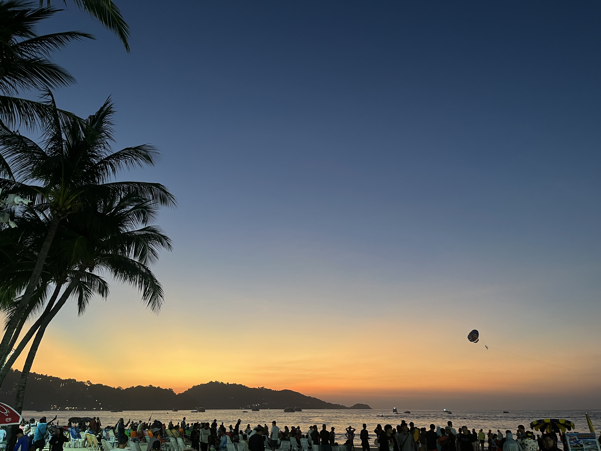
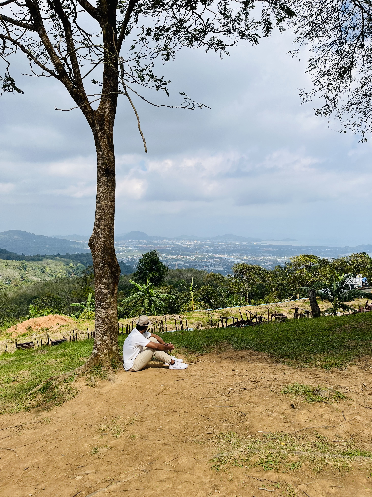
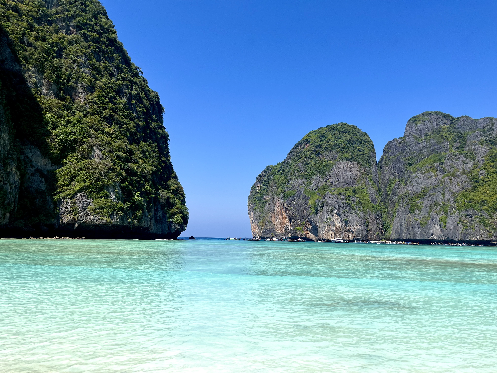
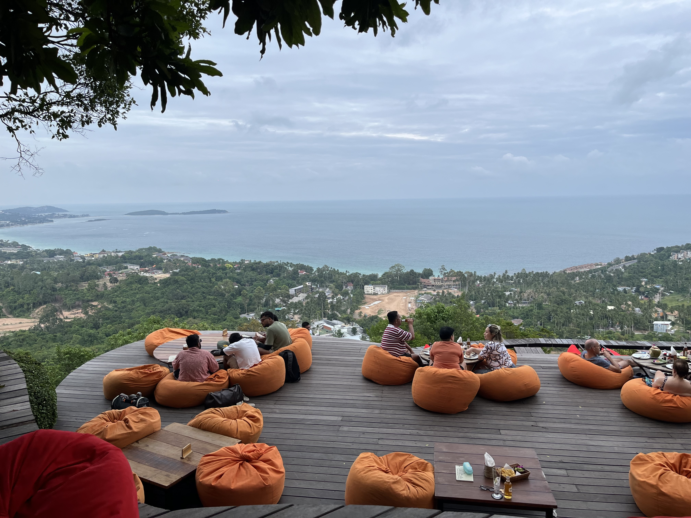
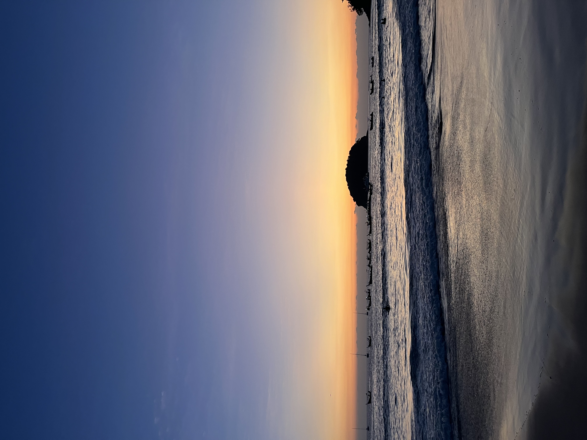
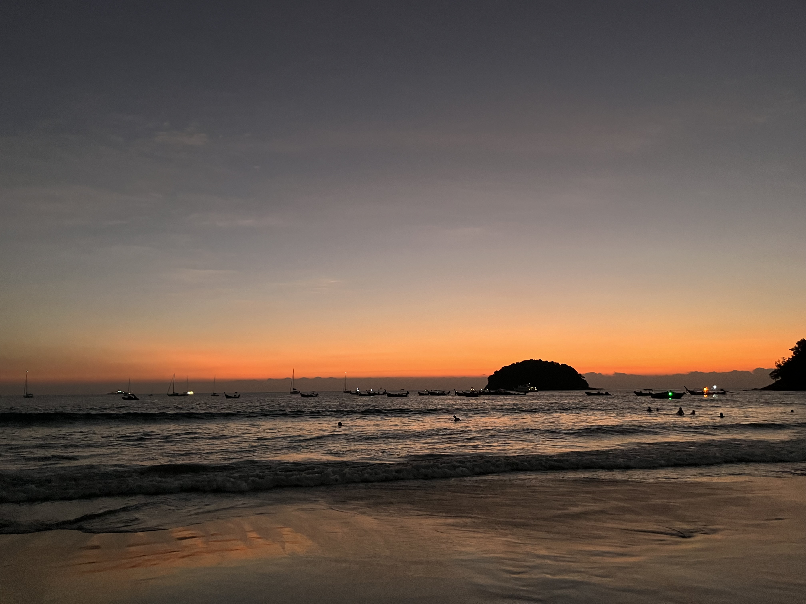
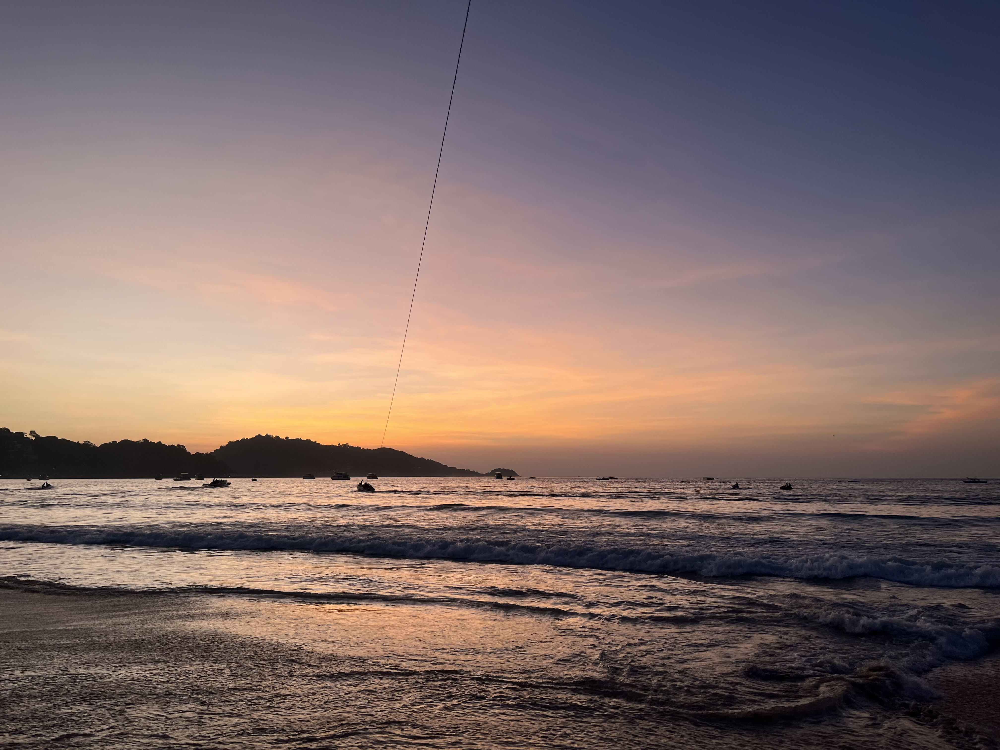
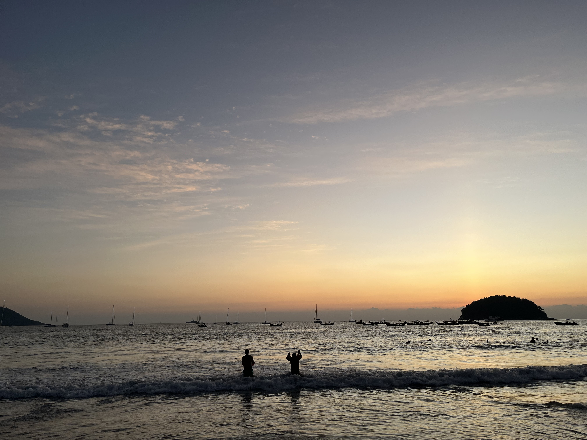
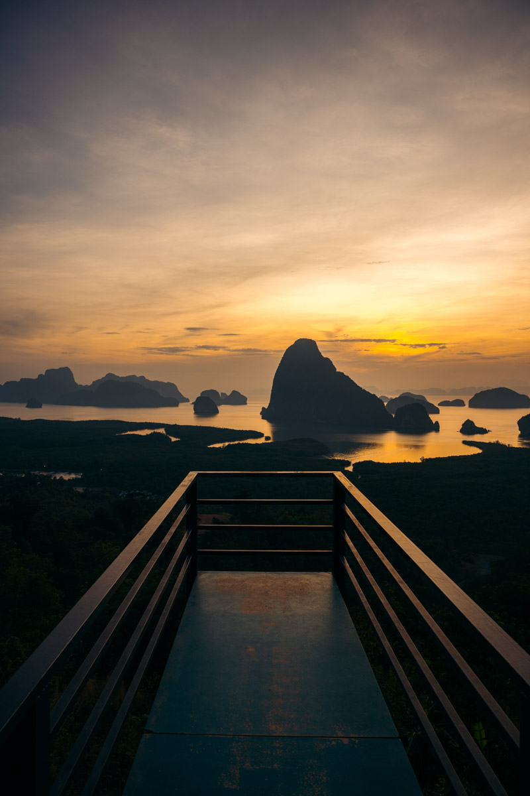

🇻🇳
Vietnam Diaries
9 days from Hanoi's beer street to Halong Bay cruises, cave treks and lantern-lit Hoi An.
Read the Diary →Seven days, two islands — Patong's nightlife, a Phi Phi island-hopping tour, and a Full Moon Party finale on Koh Samui.
Phuket (Patong) → Phi Phi Islands → Koh Samui → Koh Phangan → Surat Thani
Rented bikes, ferries & tuk-tuks — carry an IDP for bike rentals
Thai Baht (THB)
Visa-free for Indians — just fill the TDAC form online
Every stop, every cost, exactly how it happened.

First evening on Patong Beach.

Taking in the view from the Big Buddha hilltop.

Maya Bay — the most beautiful stop on the tour.
Catching the sunset on the ferry over to Koh Samui.

Bean bags and a coastline view — the Koh Samui pace.





What the itinerary adds up to, per person — flight cost sourced from current India–Phuket/Bangkok fare averages since it wasn't in the original diary.
Approximate figures for 2026 — actual cost depends on season, how far ahead you book flights, and how much of the group tour and ferry pricing you can bargain down.
9 days from Hanoi's beer street to Halong Bay cruises, cave treks and lantern-lit Hoi An.
Read the Diary →